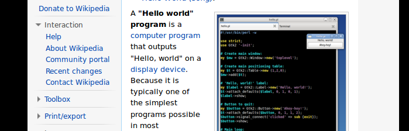
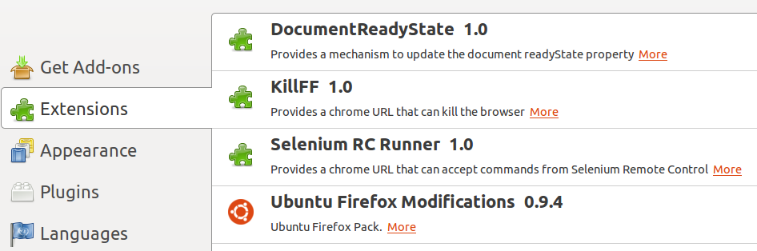

Selenium RC API 裡的 captureEntirePageScreenshot 可以對目前的視窗做整個網頁的截圖 (.png)，但只對 Firefox 有完整的支援。
以下用一個乾淨的 profile 來做測試：
$ java -jar selenium-server-standalone-<version>.jar -firefoxProfileTemplate <path-to-clean-firefox-profile>>>> from selenium import selenium
>>> sel = selenium('localhost', '4444', '*firefox', 'http://en.wikipedia.org')
>>> sel.start()
>>> sel.open('wiki/Hello_world_program')
>>>
>>> sel.capture_entire_page_screenshot('/tmp/helloworld.png', '')  >>> sel.window_maximize()
>>> sel.window_maximize()  >>> sel.capture_entire_page_screenshot('/tmp/helloworld_maximize.png', '')
>>>
>>> sel.capture_entire_page_screenshot('/tmp/folder-not-existing/filename')
>>> sel.capture_entire_page_screenshot('/tmp/helloworld_maximize.png', '')
>>>
>>> sel.capture_entire_page_screenshot('/tmp/folder-not-existing/filename')| 第二個參數 kwargs 一定要給，只好傳入空字串充數。 | |
|
安插了一個 "將視窗放到最大" 的動作，這一個步驟有其必要性，因為截圖的大小會受瀏覽器視窗的寬度影響。下面是將視窗刻意縮小之後的截圖，可以看到文字被嚴重擠壓，但超出視窗大小的部份不致於被截掉。
 |
雖然官方文件說 "The Firefox implementation is mostly borrowed from the Screengrab! Firefox extension."，不過執行期在 Tools > Add-ons > Extensions 並沒有發現 Screengrab 被安裝起來，或許被包進 Selenium RC Runner 了吧？但可以確定的是，不需要額外安裝 extension，就可以使用 Selenium 的截圖功能。

這個 API 不會自動建立資料夾，也不會在檔名後面補上 .png，使用上要注意：
>>> sel.capture_entire_page_screenshot('/tmp/folder-not-existing/filename', '')
Traceback (most recent call last):
...
Exception: ERROR: Command execution failure. Please search the user group at https://groups.google.com/forum/#!forum/selenium-users for error details from the log window. The error message is: Component returned failure code: 0x80520012 (NS_ERROR_FILE_NOT_FOUND) [nsIFileOutputStream.init]事實上，官方文件也提到了這個功能在 IE 上的部份支援 - "… IE nonHTA using the EXPERIMENTAL "Snapsie" utility"，以下是在 IE8 上的測試結果：
>>> sel = selenium('localhost', '4444', '*iexplore', 'http://en.wikipedia.org')
>>> ...
>>> sel.capture_entire_page_screenshot(r'd:\tmp\hellworld.png', '')
...
Exception: ERROR: captureEntirePageScreenshot is only implemented for Firefox ("
firefox" or "chrome", NOT "firefoxproxy") and IE non-HTA ("iexploreproxy", NOT "
iexplore" or "iehta"). The current browser isn't one of them!
>>> sel = selenium('localhost', '4444', 'iexploreproxy', 'http://en.wikipedia.org')
>>> ...
>>> sel.capture_entire_page_screenshot(r'c:\tmp\hellworld.png', '')
Traceback (most recent call last):
File "<stdin>", line 1, in <module>
File "C:\Python27\lib\site-packages\selenium-2.6.0-py2.7.egg\selenium\selenium
.py", line 1907, in capture_entire_page_screenshot
self.do_command("captureEntirePageScreenshot", [filename,kwargs,])
File "C:\Python27\lib\site-packages\selenium-2.6.0-py2.7.egg\selenium\selenium
.py", line 217, in do_command
raise Exception, data
Exception: ERROR: Snapsie failed: Is it installed? Does it have permission to ru
n as an add-on? See http://snapsie.sourceforge.net/| 先用一般的 mode 做測試，被提示只支援 IE non-HTA ("iexploreproxy", NOT "iexplore" or "iehta")。 | |
改用 iexploreproxy mode 後，從提示看起來 SnapsIE 應該是要額外安裝才行。
|
但不巧的是 SnapsIE 官網寫著 "snapsIE is no longer being actively developed here"。有時間再來試試看安裝 SnapsIE 的結果…
參考資料
-
Selenium Tips: Capturing Screenshots vs. Scrollbars! | Selenium Testing? Do Cross Browser Testing with Sauce Labs (2009-12-11) - 用
focus()捲動畫面，就可以用capture_screenshot()分批拍到 entire page。 -
The native form widgets - HTML | MDN - form control 都是 native widget，
capture_entire_page_screenshot()拍不到東西，得改用capture_screenshot()才行。